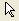
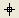
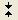
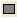
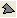
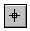
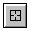
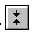

このコマンドを使用して、「プロット操作・オブジェクト作成」ツールバーを管理します。 これらのオプションのほとんどは、現在選択されているツールに対して機能を実行するため、ツールのオプションを指定する前に、まずツールを選択する必要がある場合があります。
dotoolbox [option] < toolNumber [message1 message2 ...] >
ここで、toolNumberは次を示します。
| # | ツール | # | ツール | # | ツール | # | ツール |
|---|---|---|---|---|---|---|---|
| 0 | ポインタ(オブジェクトの選択)  |
1 | 拡大 | 2 | スクリーンリーダー  |
3 | データリーダ |
| 4 | データセレクタ  |
5 | マウスで作図 | 6 | テキストツール | 7 | 矢印ツール |
| 8 | 曲線矢印ツール | 9 | 直線ツール | 10 | 四角形ツール  |
11 | 円ツール |
| 12 | 多角形ツール  |
13 | 折れ線ツール | 14 | 自由閉曲線ツール | 15 | 自由曲線ツール |
| 16 | 軸スケールの復元 | 17 | アクティブプロットから選択：レイヤ内でアクティブプロットまたはすべてのプロットのデータを選択（Tabキーを押してモードを切り替え） | 18 | 現プロットのマスクポイント：レイヤ内でアクティブプロットまたはすべてのプロットでデータをマスクします（Tabキーを押してモードを切り替え） | 19 | ズームパンイングツール (8.5.0) |
| 20 | 数式を挿入 (8.5.0) |
21 | Wordオブジェクトを挿入 (8.5.0) |
22 | Excelオブジェクトを挿入 (8.5.0) |
23 | OLEオブジェクトを挿入 (8.5.0) |
スクリーンリーダーとデータリーダーツールに関する注意
スクリーンリーダー  
これらのツールのいずれかを選択すると、情報は次の変数に読み込まれます。
データセレクタツールに関する注意
データセレクタ 
このスクリプトは、行インデックスと各マーカーのXとYの値を報告します。
dotool 4; def pointproc { py = %C[mks1]; %A = xof(%C); px = %A[mks1]; type -a Left marker is at index $(mks1), X is $(px),Y is $(py); py = %C[mks2]; %A = xof(%C); px = %A[mks2]; type -a Right marker is at index $(mks2), X is $(px),Y is $(py); dotool 0; };
構文： dotoolbox no option toolNumber [message1 message2 message3 ...]
「プロット操作・オブジェクト作成」ツールバーからツールtoolNumberを選択します。ToolNumberは0（ポインタツール）～18（現プロットのマスクポイント）の値でなければなりません。各メッセージは、ステータスバーに表示できるツールtoolNumberのヘルプテキスト行を定義します。-nオプションを参照してください。一部のツールは複数のメッセージを許可しません。また一部のツールは最初のメッセージを上書きします。
構文： dotoolbox -a
Altキーを押すのと同様。このスイッチの機能は定義されていません。
構文： dotoolbox -b toolNumber
「プロット操作・オブジェクト作成」ツールバーをのツール toolNumberをブロックします。このオプションを選択すると、ツールは選択できなくなります。ブロックを解除するには-uオプションを参照してください。
構文： dotoolbox -c
Ctrlキーを押すのと同様です。クリック&ドラッグしてデータポイントを移動できます（データは移動可能である必要があります。データは、「マウスで作図」ツールで描画するか、setコマンドで移動可能として設定します）。このオプションは、データリーダーツールがアクティブな場合にのみ有効です。
構文 dotoolbox -d
マウスのシングルクリックをダブルクリックに相当するようにします。
構文： dotoolbox -dh toolNumber
「プロット操作・オブジェクト作成」ツールバーから toolNumber ツールを開きますが、データ表示ツールは開きません。toolNumber値は、スクリーンリーダー = 2、データリーダー = 3、データセレクタ = 4です。
構文： dotoolbox -h message
選択したツールの「プロット操作・オブジェクト作成」ツールバーステータスバーのヘルプ messages のリストの最後にメッセージを追加します。リストは先入れ後出しです。注:dotool -h と dotool -n は、順番に使用することを目的としています (-h が最初)。
構文： dotoolbox -i str
指定したツールを呼び出します。strには2文字または名前全体を指定することができます： DR = データリーダー、SR = スクリーンリーダー、SI = 拡大、DS = データセレクタ
//どちらのスクリプトもデータリーダーを呼び出す dotool -i dr; dotool -i DataReader;
構文： dotoolbox -k
データリーダーツールがアクティブな場合、キーボードの左右矢印キーを使用してカーソルの移動を無効にします。データリーダ―ツールを選択してdotool -kを実行した後、キーボードの左右矢印を使用しても、マウスカーソルが現在のデータポイントの選択と一緒に動きません。
構文： dotoolbox -l
「プロット操作・オブジェクト作成」ツールバーツールの使用をアクティブレイヤに制限します。
構文： dotoolbox -n
定義されている次のヘルプメッセージに進み、ステータスバーにテキストを表示します。注意: dotool -hとdotool -nは連続して使用することを意図しています(-hが先)。
構文： dotoolbox -p [WindowName]
レイアウトページウィンドウに貼り付けるグラフまたはワークシートウィンドウを選択します。WindowNameが指定されている場合は、そのウィンドウが使用されます。ウィンドウが指定されていない場合は、ワークシートオブジェクトを選択ダイアログボックスが開きます。ウィンドウを選択したら、レイアウトページウィンドウ内のオブジェクトの領域をクリックしてドラッグします。
構文： dotoolbox -pw [WindowName]
レイアウトページウィンドウに貼り付けるワークシートウィンドウを選択します。WindowNameが指定されている場合は、そのウィンドウが使用されます。ウィンドウが指定されていない場合は、ワークシートオブジェクトを選択ダイアログボックスが開きます。ウィンドウを選択したら、レイアウトページウィンドウ内のオブジェクトの領域をクリックしてドラッグします。
構文： dotoolbox -pg [WindowName]
レイアウトページウィンドウに貼り付けるグラフウィンドウを選択します。WindowNameが指定されている場合は、そのウィンドウが使用されます。 ウィンドウが指定されていない場合は、グラフオブジェクトを選択ダイアログボックスが開きます。ウィンドウを選択したら、レイアウトページウィンドウ内のオブジェクトの領域をクリックしてドラッグします。
構文： dotoolbox -q
「プロット操作・オブジェクト作成」ツールバーを終了します。現行ツールの選択を解除し、ポインタツールを選択します。これはquittoolboxマクロが定義されている場合は実行しません。
構文： dotoolbox -r
データリーダーツールを使用する場合、このオプションはカーソルがdataset内でのみ選択されるように制限します。indexが含まれている場合、データセレクタまたはデータリーダーツールはindex + 1位置に移動します。このコマンドは、データリーダーツールの起動後に実行する必要があります。
構文： dotoolbox -s
Shiftキーを押すのと同様です。カーソル移動速度に10を乗算します。
構文： dotoolbox -t show
プロット操作・オブジェクト作成ツールバーを表示または非表示にします。Showには、1= showおよび0= hideの値を指定できます。
構文： dotoolbox -u toolNumber
ツール toolnumberのブロックを解除します。toolNumberが指定されていない場合は、すべてのツールのブロックを解除します。
構文： dotoolbox -v
スクリーンリーダーツールを使用する場合、このオプションはカーソルを現在のX値で垂直方向のみの移動に制限します。 （-yオプションと同様）。
構文： dotoolbox -x
スクリーンリーダーツールを使用している場合、このオプションはカーソルを現在のY値で水平方向のみの移動に制限します。
構文： dotoolbox -y
スクリーンリーダーツールを使用する場合、このオプションはカーソルを現在のX値で垂直方向のみの移動に制限します。 （-vオプションと同様）。
構文： dotoolbox -z
現在のツールがアクティブな状態でズームツールをアクティブにします。
次のスクリプトは、ステータスバーにメッセージを表示し、現在のレイヤに制限付きでスクリーンリーダーツールを使用します。
dotool 2 (XとYの値を読み取る場所をクリック); dotool -l;
次のスクリプトは、ステータスバーにメッセージを表示し、(シングル) クリックでダブルクリックとなるデータリーダーツールを使用します。 5秒後、別のメッセージが表示され、ツールはポインタツールに戻ります。
dotool 3 (ポイントをクリックして選択) (時間切れ); dotool -d; sec -p 5; dotool -n; dotool 0;
このスクリプトはデータを生成してプロットします。データセレクタツールが実行され、ステータスバーに指示を入力します。2つの点をダブルクリック（または点をクリックしてEnterキーを2回押す）すると、2つの点に関する情報と接続線の勾配がスクリプトウィンドウに入力されます。
newbook; col(1)=data(1,30); col(2)=uniform(30); col(3)=normal(30); range r1 = [%(page.name$)]%(layer.name$)!(1,2); range r2 = [%(page.name$)]%(layer.name$)!(1,3); win -t plot linesymb; plotxy iy:=r1 ogl:=1 color:=2; plotxy iy:=r2 ogl:=1 color:=4; dotool 3 (ignored) (Double-click or Press Enter to pick first point) (Double-click or Press Enter to pick second point); count = 1; dotool -n; def pointproc { PX$(count) = X; PY$(count) = Y; count++; dotool -n; if(count == 3) { type Slope of line connecting $(PX1),$(PY1) to $(PX2),$(PY2); type is $((PY2-PY1)/(PX2-PX1)); dotool 0; } }
描画データツールを使用するときにプロットスタイルを制御するために、BeforePointProcとAfterPointProcの2つのマクロがあります。
必要なOriginのバージョン: Origin 2015 SR0以降
LabTalkスクリプトの例を以下に示します。
def AfterPointProc { if (getpts.count >= 3) { set %B -l 9; // 線の接続方法をsplineに設定 } } dotool 5;
上記のLabTalkスクリプトでAfterPointProcをBeforePointProcに変更すると、同じスプライン結果が得られます。